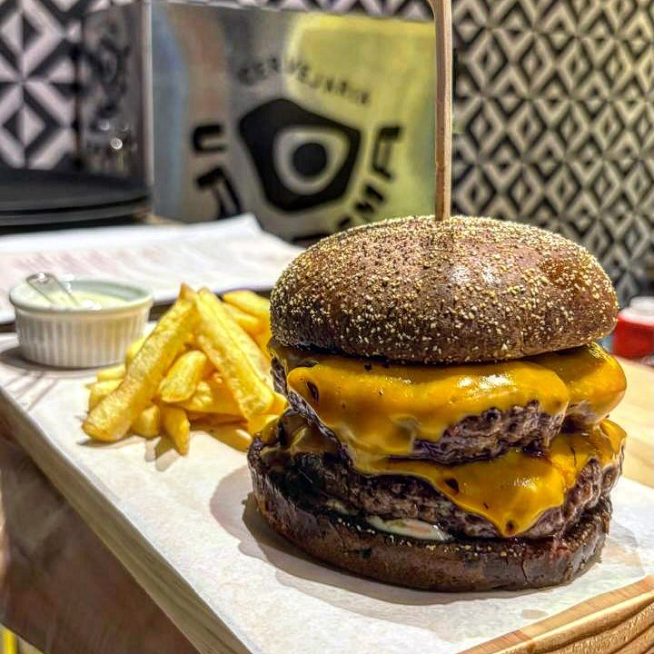
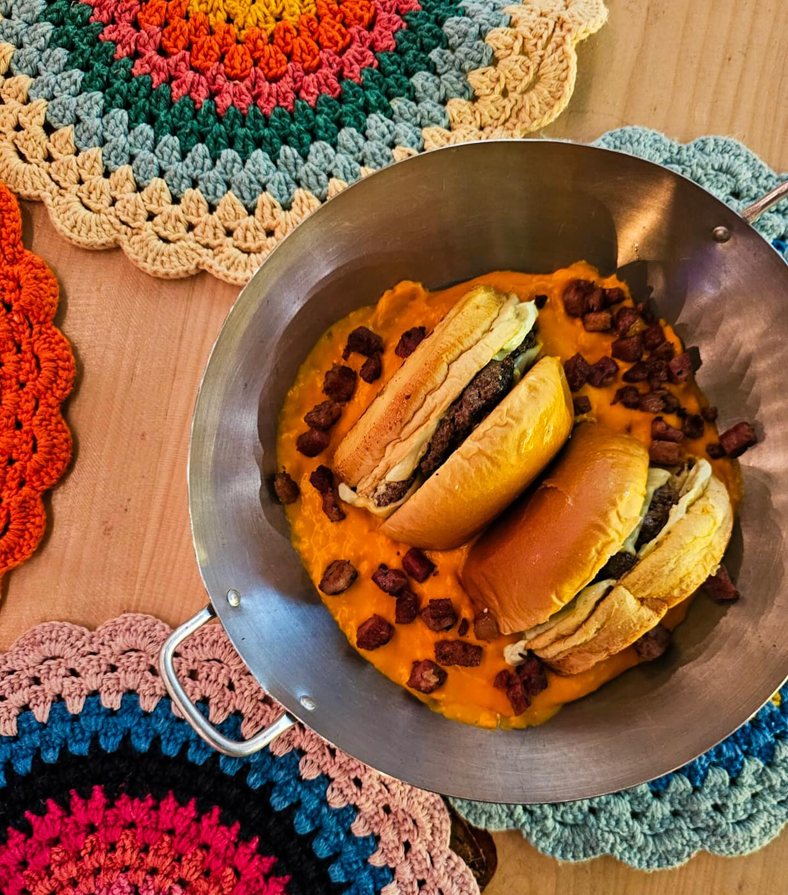
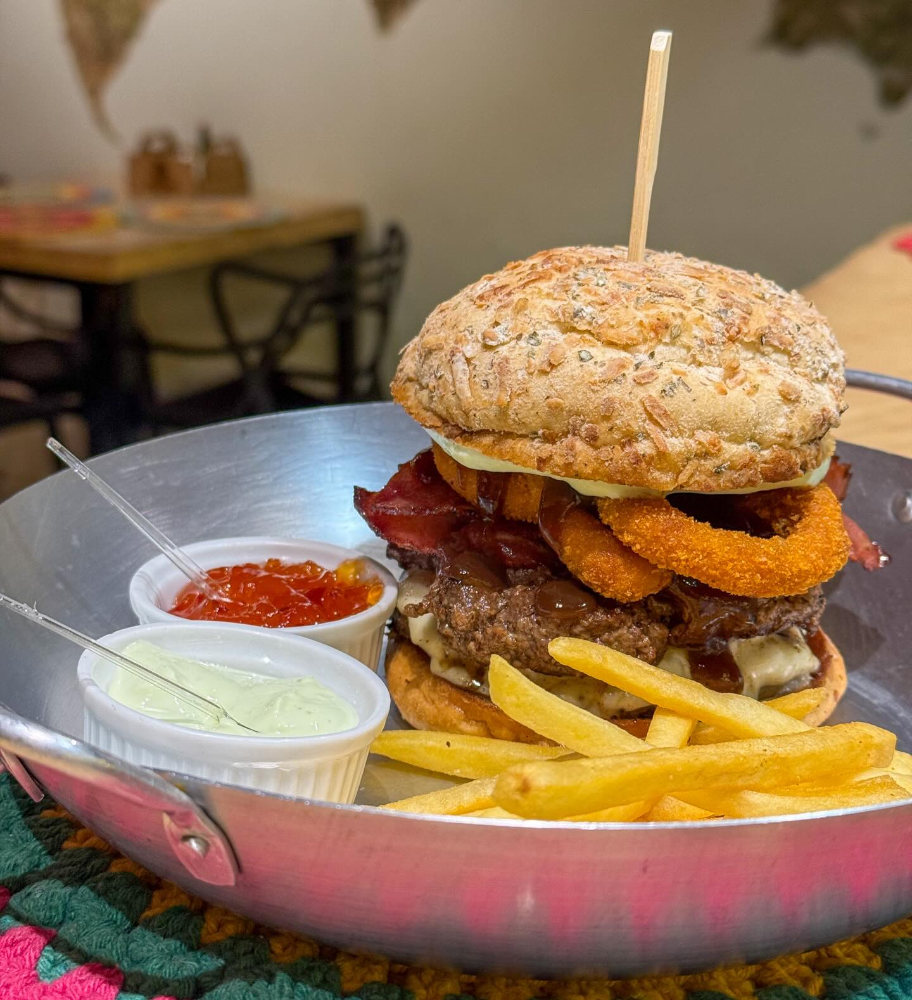
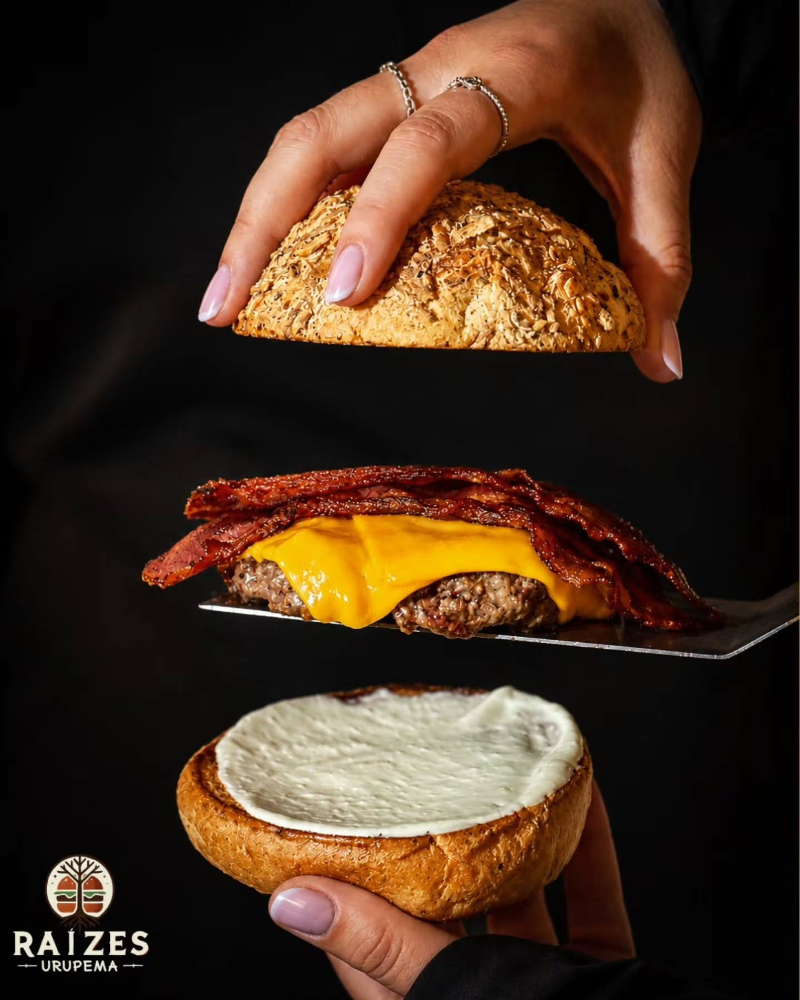

Origem, fogo e afeto
Uma experiência
com raízes.
Em Urupema, cada encontro à mesa acompanha o ritmo da serra. Ingredientes selecionados, preparo cuidadoso e uma hospitalidade que aquece — para saborear sem pressa e guardar na memória.

Não é apenas
um hambúrguer.
É uma experiência.

Da cozinha
para a mesa.
Camadas de sabor, contrastes de textura e receitas que valorizam cada ingrediente. Uma cozinha direta, generosa e cheia de personalidade.

Assinatura da casa
Os sabores
do RAÍZES.
Do pão ao molho, cada camada tem propósito. Clássicos marcantes e criações que fazem da primeira mordida o começo de uma história.
Fondue · Noites frias
À mesa, tudo conversa
Para
acompanhar.
Batatas douradas01
Molhos da casa02
Fondue na serra03
Bebidas selecionadas04

Entre madeira,
sabores e
aconchego.
Uma casa que recebe como a serra: com calor, presença e boas histórias compartilhadas ao redor da mesa.
Momentos
RAÍZES.
Explore sabores, encontros e detalhes da nossa cozinha.
Raízes em
Urupema.
Em uma das cidades mais frias do Brasil, encontramos calor à mesa. A paisagem, o tempo e a cultura da serra dão sabor ao que fazemos.
28° 00' S · 49° 35' W
Venha viver essa experiência
Urupema,
Santa Catarina.
Reserve um tempo para conhecer o RAÍZES. Acompanhe nosso Instagram para conferir novidades, horários e informações atualizadas.
Acompanhar no Instagram- @raizesurupema